1과목: 대기오염개론
1. 다음은 Dioxin의 특징에 관한 설명이다. ( )안에 가장 알맞은 것은?
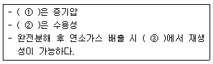
2. 대기오염물질의 확산과 관련있는 스모그현상과 기온역전에 관한 내용으로 가장 거리가먼 것은?
3. 실내공기오염물질인 라돈(Rn)에 관한 설명 중 옳지 않은 것은?
4. 오존(O3)에 관한 설명 중 옳지 않은 것은?
5. 파장이 5240Å인 빛 속에서 밀도가 0.85g/cm3이고, 지름이 0.8㎛인 기름방울의 분산면적비 K가 4.1이라면 가시도가 2414m 되기 위해서는 분진의 농도는 약 얼마가 되어야 하는가?
6. Los Angeles Smog 사건에 관한 설명 중 옳지 않은 것은?
7. 다음 대기상태에 해당되는 연기의 형태는?
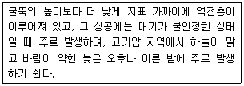
8. Sutton의 확산방정식에서 현재 굴뚝의 유효고도가 40m일 때, 최대지표농도를 1/4로 낮추려면 굴뚝의 유효고도를 얼마만큼 더 증가시켜야 하는가? (단, 기타 조건은 같다고 가정한다.)
9. 다음 설명하는 법칙으로 옳은 것은?
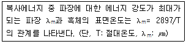
10. 다이옥신을 이루고 있는 원소 구성으로 가장 알맞게 연결된 것은? (단, 산소는 2개)
11. 대기권의 구조에 관한 설명 중 가장 거리가 먼 것은?
12. 국지풍에 관한 설명 중 옳지 않은 것은?
13. 다음 중 2차 오염물질이 아닌 것은?
14. 직경이 25cm인 관에서 유체의 흐름속도가 2.5m/sec이고, 유체의 점도가 1.75×10-5kg/mㆍsec라고 할 때 이 유체의 레이놀드수(Nre)와 흐름특성은? (단, 유체의 밀도는 1.15kg/m3이다.)
15. 다음은 어떤 대기오염물질에 대한 설명인가?
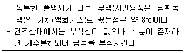
16. 다음 중 오존층 보호를 위한 국제협약은?
17. Down wash 현상을 방지하기 위한 조건 중 가장 적절한 것은? (단, U: 풍속, Vs: 굴뚝 배출가스의 유속)
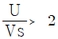
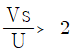
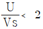
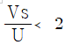
18. 지상 10m에서의 풍속이 4m/sec일 때, 44m 높이에서의 풍속은 얼마인가? (단, Deacon의 지수법칙 이용, 풍속지수(p)는 0.2)
19. 대류권에서의 CO2의 평균농도가 370cm이고, 대류권의 평균높이가 10km일 때, 대류권내에 존재하는 CO2의 무게는? (단, 지구의 반지름을 6400km라 가정한다.)
20. 다음 중 최근까지 알려진 것으로 온실효과에 영향을 미치는 기여도(%)가 가장 큰 물질은?
2과목: 대기오염 공정시험 기준(방법)
21. 다음은 굴뚝 배출가스 중 크롬화합물을 흡광광도법으로 측정하는 방법이다. ( )안에 알맞은 것은?
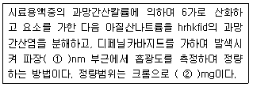
22. 대기오염공정시험방법상 명시된 용어에 관한 설명 중 다음 ( )안에 알맞은 것은?
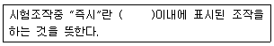
23. 4-아미노 안티피린법으로 페놀화합물을 정량할 때, 부의오차를 일으키는 물질만의 조합으로 옳은 것은?
24. 다음 중 가스크로마토그래프법에서 사용되는 용어가 아닌 것은?
25. 단면이 정방형인 연도를 등면적으로 4구분으로 나누어 먼지를 측정하였다. 각 구분면의 유속은 4.8, 5.0, 5.2, 4.5m/sec 이며, 그 구분에 대응하는 분진농도는 각각 0.55, 0.50, 0.48, 0.52g/Sm3이었다. 이 때 총평균 먼저농도는?
26. 피토우관을 사용하여 가스유속을 측정할 때 다음과 같은 결과를 얻었다고 할때, 유속(m/s)은?
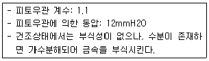
27. 흡광광도법에서 흡수셀의 세척방법에 관한 설명 중 가장 거리가먼 것은?
28. 악취시험방법으로 옳지 않은 것은?
29. 굴뚝 배출가스 내의 벤젠을 흡광광도법으로 분석하는 경우 시료채취량이 10L일 때, 적합한 시료가스중의 벤젠농도의 범위는?
30. 흡광광도법에 관한 설명 중 옳지 않은 것은?
31. 굴뚝 배출가스내의 페놀류의 분석방법 중 가스크로마토그래프법의 충전제로 아피에존 L을 사용할 때의 조건으로 옳지 않은 것은?
32. 다음 중 비산먼지를 하이볼륨에어샘플러법을 이용하여 원칙적으로 시료채취를 하지 않는 경우로 가장 거리가 먼 것은?
33. 환경기준시험에 있어서 시료채취방법에 관한 다음 설명 중 옳지 않은 것은?
34. 굴뚝, 덕트 등을 통하여 대기중으로 배출되는 가스상 물질을 분석하기 위한 시료채취방법에 관한 설명 중 옳지 않은 것은?
35. 환경대기내의 옥시단트의 수동측정방법 중 중성요오드화칼륨법의 측정범위(오존으로써)기준으로 옳은 것은?
36. 굴뚝 배출가스 중의 염화수소농도를 분석하는 방법으로 가장 거리가 먼 것은?
37. 분진을 포함하는 건조가스가 상온상압으로 굴뚝내에서 20m/sec의 유속으로 흐르고 있다. 함진공기를 구경 10mm의 흡인노즐을 사용 측정할 경우, 등속흡인을 위한 흡인유량은 몇 L/min인가? (단, 흡인량의 측정은 건식 가스미터를 사용하였고, 측정법은 먼지측정방법 중 수동측정방법임.)
38. 환경대기 중 휘발성유기화합물을 고체흡착 열탈착방법으로 분석하고자 할때, 다음 중 열탈착 장치에 대한 설명으로 옳지 않은 것은?
39. 굴뚝 배출가스 내의 황화수소(H2S)의 흡광광도법 (메틸렌블루우법)에서의 농도범위가 5-100ppm일 때 알맞은 시료 채취량은?
40. 굴뚝 배출가스 중 총탄화수소의 측정방법에 대한 설명으로 옳지 않은 것은?
3과목: 대기오염방지기술
41. 여과집진장치의 특성에 관한 설명으로 옳지 않은 것은?
42. 유체가 관로를 흐를 때 발생되는 압력손실에 관한 설명으로 옳지 않은 것은?
43. 전기집진장치에 관한 설명으로 옳지 않은 것은?
44. 다음 중 이젝터를 사용하여 물을 고압분무하여 수적과 접촉 포집하는 방식으로 송풍기를 사용하지 않는 것이 특징이며, 처리가스량이 많을 경우에는 효과가 적은 집진장치는?
45. 벤츄리 스크러버에 관한 설명으로 옳지 않은 것은?
46. 부탄 1kg을 표준상태에서 완전연소시키는데 필요한 이론산소의 량(kg)은?
47. 집진장치에 관한 설명 중 옳지 않은 것은?
48. 미분탄연소의 장점으로 거리가 먼 것은?
49. 전기집진장치에서 먼지의 비저항이 적을 때(104Ωㆍcm 이하)전기저항을 높여주기 위하여 주입하는 것은?
50. 어떤 집진장치의 입구와 출구에서 가스의 함진농도를 측정한 결과 각각 30g/Sm3, 0.3g/Sm3 이었고, 또한 입구와 출구의먼지 중 입경범위가 0-5㎛인 것의 질량분율이 각각 10% 및 50% 이었다면 이 집진장치의 0-5㎛인 시료먼지에 대한 부분 집진율은?
51. 어느 보일러의 배출가스 조성이 CO2: 8%, O2: 12%, N2: 80% 이었다면 공기비는?
52. 연료의 착화온도에 관한 설명으로 옳지 않은 것은?
53. 세정식 집진장치의 특성과 가장 거리가 먼 것은?
54. 이론적으로 탄소 1kg을 연소시키면 30000kcal의 열이 발생하며, 수소 1kg을 연소시키면 34100kcal의 열이 발생된다면 에탄 2kg 연소시 발생되는 열량은?
55. 어떤 집진장치의 압력손실이 600mmH2O, 처리가스량이 750m3/min, 송풍기 효율이 75%일 때 소요동력(HP)?
56. 다음 중 헨리법칙이 가장 잘 적용되는 물질은?
57. 관성력 집진장치에 관한 다음 설명 중 옳지 않은 것은?
58. 흡착제에 관한 설명 중 옳지 않은 것은?
59. 일반 보일러실에서 황 함유량이 0.8%, 비중이 0.93인 B-C유를 1000L/hr로 소비시킬 때 방출되는 SO2의 이론량(Sm3/hr)은?
60. 연료 1kg을 연소하여 발생되는 건연소가스량이 12.50Sm3/kg이다. 이 때 연료 1kg중에 포함된 수소의 중량비가 20%라면 습연소가스량(Sm3/kg)은 얼마인가?
4과목: 대기환경 관계 법규
61. 대기환경보전법규상 자동차 연료(휘발유) 제조기준으로 옳지 않은 것은? (단, 적용기간: 2008년 12월 31일까지)
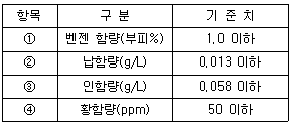
62. 대기환경보전법령상 휘발유 사용 자동차의 제작차 배출허용기준이 설정된 오염물질의 종류에 해당되지 않는 것은?
63. 환경정책기본법령상 오존의 대기 환경기준은? (단, 1시간 평균치이며, 단위: ppm)
64. 대기환경보전법규상 대기오염물질에 대한 자가측정항목이 아닌 것은?
65. 대기환경보전법상 100만원 이하의 과태료 부과대상인 자는?
66. 대기환경보전법규상 대기오염물질배출시설에 해당되지 않는 것은? (단, 비금속광물제품제조시설에 한한다.)
67. 대기환경보전법규상 위임업무 보고횟수 기준에 관한 사항이다. ( )안에 알맞은 것은?
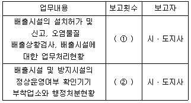
68. 대기환경보전법규상 대기오염 경보단계 중 중대경보가 발령되는 오염물질의 농도기준으로 옳은 것은?
69. 대기환경보전법령상 최초로 배출시설을 설치한 경우 사업자가 환경기술인을 임명신고할 때의 기간기준으로 옳은 것은?
70. 대기환경보전법규상 배출시설의 변경신고 대상이 아닌 것은?
71. 다중이용시설 등의 실내공기질관리법규상 실내공간오염물질에 해당하지 않는 것은?
72. 대기환경보전법규상 대기오염물질 배출시설(공통시설)기준으로 옳지 않은 것은?
73. 대기환경보전법규상 휘발성유기화합물을 배출하는 시설을 설치하고자 하는 자가 규정의 첨부서류와 함께 휘발성유기화합물 배출시설 설치신고서를 시ㆍ도지사에게 제출하여야 하는 기간기준으로 옳은 것은?
74. 대기환경보전법규상 “특정대기유해물질”에 해당되지 않는 것은?
75. 악취방지법규상 악취검사기관의 기술인력 기준 중 악취분석요원에 해당하는 자로 가장 거리가 먼 것은?
76. 대기환경보전법령상 기본부과금의 농도별 부과계수로 옳게 연결된 것은? (단, 연료를 연소하여 황산화물을 배출하는 시설임(황산화물의 배출 저감을 위해 방지시설을 설치한 경우와 생산공정상 황산화물의 배출이 저감된다고 인정하는 경우 제외))
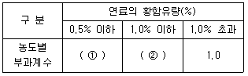
77. 대기환경보전법령상 일일오염물질배출량 및 일일유량의 산정방법으로 옳은 것은?
78. 대기환경보전법규상 환경기술인의 관리사항인 것은?
79. 악취방지법규상 위임업무 보고사항 중 업무내용의 보고횟수 기준이 연 4회인 것은?
80. 대기환경보전법규상 대기환경규제지역의 지정대상지역 기준으로 옳은 것은?